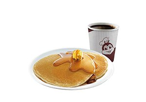

MY TOP 3 DISHES
BREAKFAST | CHICKENJOY | DESSERTS
You can hover your mouse in order to be more informed to about the name of the dish

2 - pc. Pancakes

2 - pc. Chickenjoy

BREAKFAST | CHICKEN JOY | DESSERTS
Between 6 and 10 a.m. would be the ideal time to take this first meal, mainly so that you set yourself up for a second meal a few hours later. What you eat at breakfast has a large impact on the rest of the day.
Philippines' best-tasting crispylicious, juicylicious Chickenjoy that is crispy on the outside, tender and juicy on the inside.
Dessert is the sweetest course of the meal. It follows the main dish in a three-course meal. The course usually offers sweet foods, such as confections, and may include appropriate wine varietals or a liqueur.
BREAKFAST | CHICKENJOY | DESSERTS
You can hover your mouse in order to be more informed to about the name of the dish